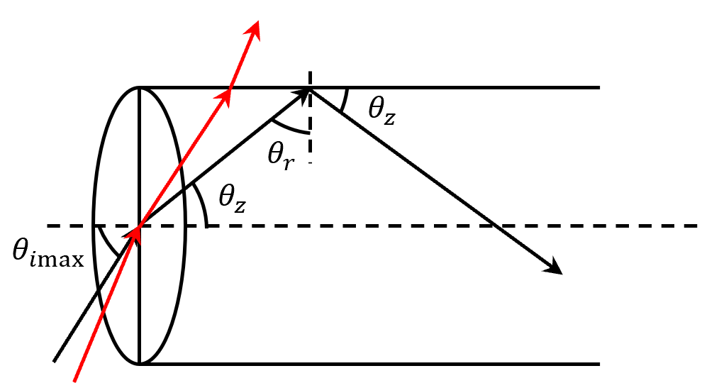

当光纤芯径远大于光波波长\(\lambda_0\)时，可近似认为\(\lambda_0\to0\)，从而将光波近似看成由一根根光线所构成，因此，可以采几何光学的方法来分析光线的入射、传播（轨迹）及时延（色散）和光强分布等特性，这种分析方法即为光线理论.
光线理论的主要优点是简单直观，在分析芯径较粗的多模光纤时，可以得到较精确的结果.
单模光纤芯径较细.
但由于采用了几何光学近似，光线理论无法解释诸如：模式分布、包层模、模式耦合及光场分布等现象.
而且，当不满足\(\lambda_0\)远小于芯径的近似条件时（如对单模光纤），光线理论的分析结果存在很大误差.
在光纤中传播的光线遵从光线方程.
SIOF中，光线沿直线传播；GIOF中，光线轨迹为曲线.
光纤中存在两类光线：
子午光线：在子午平面上传播的光线，其传播较简单，子午平面是与纤轴相交的且与纤壁垂直的所有平面.
偏斜光线：与纤轴既不相交也不平行的光线，其传播一般较复杂.

定义光纤的数值孔径为：入射媒质折射率与最大入射角的正弦值之积，即：
当光纤中光线恰满足全反射条件时，\(\theta_i\)最大，全反射条件为：
$$\frac{n_1}{n_2}\sin\theta_r = 1$$ $$\therefore\sin\theta_r = \cos\theta_z = \frac{n_2}{n_1}$$ $$\therefore\sin\theta_z = \frac{\sqrt{n_1^2-n_2^2}}{n_1}$$ $$\therefore NA = n_1\sin\theta_z = \sqrt{n_1^2 - n_2^2}$$ $$\because\Delta = \frac{n_1^2-n_2^2}{2n_1^2}$$ $$\therefore NA = \sqrt{2n_1^2\Delta} = n_1\sqrt{2\Delta}$$则能够进入光纤传播的光线落在以\(\theta_{1\max}\)为锥角的圆锥中，称\(\theta_{1\max}\)为光纤的收光角.
数值孔径是光纤性能的一个重要参数，它标志着光纤的收光能力或当与光源耦合时其耦合效率的大小.
[注]光纤的数值孔径只决定于光纤的折射率，而与光纤的几何尺寸无关，这一点与普通的光学系统有所不同.
由光纤数值孔径的定义式可知，\(\Delta\)的值越大，光纤数值孔径越大，这对提高光纤耦合效率是有利的.
但\(\Delta\)的增大会使光纤的另一重要传输性能通信容量降低.
因为光纤的通信容量正比于光纤传输带宽或单位长度光纤脉冲展宽的倒数.
对于SIOF，不同角度传播的光线所花费的时间不同，从而导致光脉冲的展宽.
光线传播单位轴向长度所花的时间.
沿轴线传播的光线的渡越时间为：
沿\(\theta_z\)角传播的光线，渡越时间为：
$$t_0/\cos\theta$$\(\cos\theta_2 = n_2/n_1\)时，角向光线与轴向光线延时差最大，为：
什么是延时差？
传输容量为时延差的倒数.
多模光纤不适合光纤通信，因为其通信容量不高；也不适合用来传播图像（不聚焦）.
偏斜光线在光纤两端的投影，会包围出一个内接圆，称为内散焦面，其半径为：
$$r_{ic} = a\cos\theta_\phi$$SIOF中，偏斜光线传播时不亚于纤轴相交，因而不限于单一平面内，其光线轨迹是螺旋状折现，限制在\(r_{10}\leq r\leq a\)的圆筒内传播.
其轨迹折线在光线端面上的投影形成一个多边形，其内接圆称为内散焦面.
偏斜光线对应的数值孔径\(NA_s\)为：
$$NA_s = NA/\sin\theta_\phi$$上式表明，偏斜光线收光角大于子午光线.
因此，若考虑到偏斜光线的贡献，光线实际的收光能力比单纯考虑子午光线时大.
偏斜光线的最大延时差为：
$$\Delta \tau_s = \left[\frac{n_1}{\sqrt{n_1^2-NA_s^2}} - 1\right]\frac{n_1}{c}$$由于\(NA_s\geq NA\)，故偏斜光线延时差大于子午光线延时差.
波动理论是一种更为严格的分析方法，其严格在于：
缺点是求解复杂，甚至有时无法得到解析解.
光纤是一种介质光波导，这种波导具有如下特点：
对于光纤中的一般问题，均可以使用标量波动方程解决；只有在进行更精密的分析时，才使用矢量波动方程.
圆柱坐标系中，纵向场分量\(E_z\)与\(H_z\)满足的波导场方程为：
$$\left(\frac{\partial^2}{\partial r^2} + \frac{1}{r}\cdot\frac{\partial}{\partial r} + \frac{1}{r^2}\cdot\frac{\partial^2}{\partial\theta^2} + \chi^2\right)\left[\begin{matrix}E_z\\H_z\end{matrix}\right] = 0$$ 模式分布光纤的结构参数可由其归一化频率\(V\)表征：
$$V = (2\pi/\lambda_0)a\sqrt{n_1^2 - n_2^2} = k_0an_1\sqrt{2\Delta}$$\(V\)越大，允许存在的导模数越多.
除基模外，其他导模都可能在某个\(V\)值以下不允许存在，称之为导模的截止，此时导模转换为辐射模.
使某一导模截止的\(V_0\)值称为导模的截止条件.
当导模的本征值\(\beta\to n_1k_0\)时，导模场紧紧束缚于纤芯中传输，称之为导模的远离截止.
每个导模都对应一个合适的\(V\)值使其远离截止，称之为导模的远离截止条件.
\(V\)越大，\(NA\)越大，更多的光线可以进入光纤.
纤芯内：
$$\chi_1 = \sqrt{n_1^2k_0^2 - \beta^2},\quad\beta\lt n_1k_0$$\(\chi_1\)为实数.
包层内：
$$\chi_2 = \sqrt{n_2^2k_0^2 - \beta^2},\quad\beta\gt n_2k_0$$\(\chi_2\)为纯虚数.
方便起见，定义三个实的归一化参数：
$$U = a\chi_1 = \sqrt{n_1^2k_0^2 - \beta^2}\cdot a$$ $$W = -ia\chi_2 = \sqrt{\beta^2 - n_2^2k_2^2}\cdot a$$ $$b = \frac{W^2}{V^2} = \frac{\beta^2 - n_2^2k_0^2}{n_1^2k_0^2 - n_2^2k_0^2}$$\(b\in[0,1]\)是场的归一化传播常数.
\(U\)与\(W\)是场的归一化横向传播常数.
\(U\)值反映了导模在芯区中的驻波场的横向振荡频率.
\(W\)值反映了导模在包层中的消逝场的衰减速度，\(W\)越大衰减越快.
\(U\)与\(W\)满足：
$$V^2 = U^2 + W^2$$